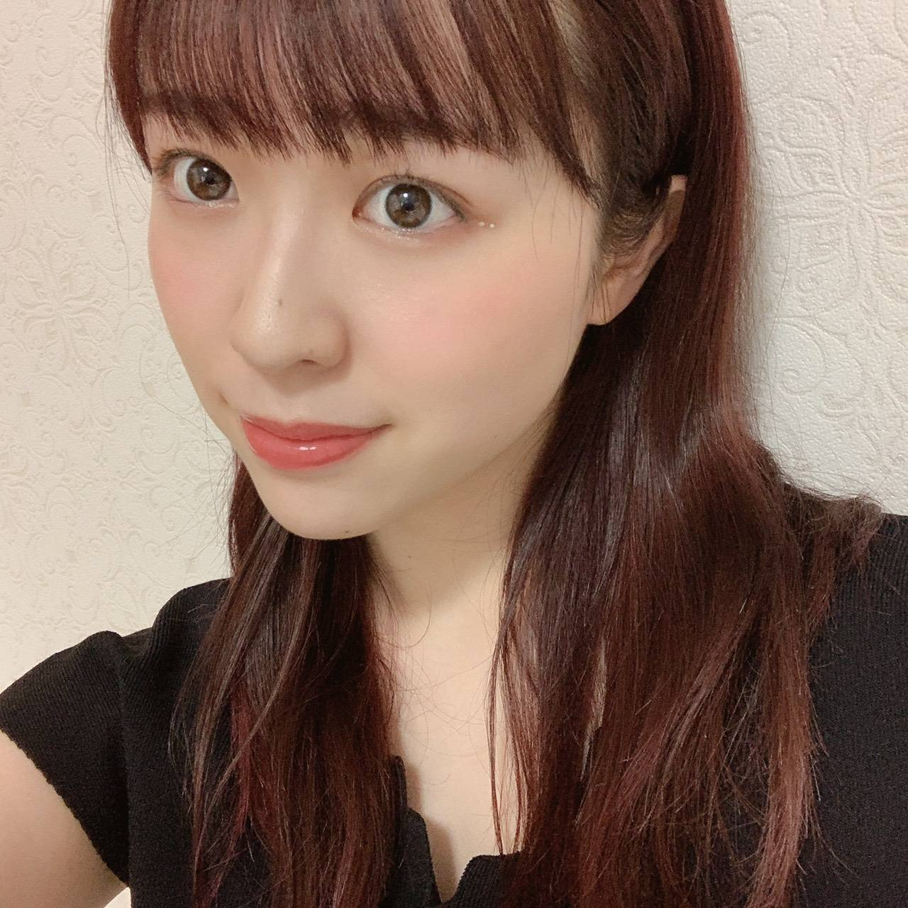
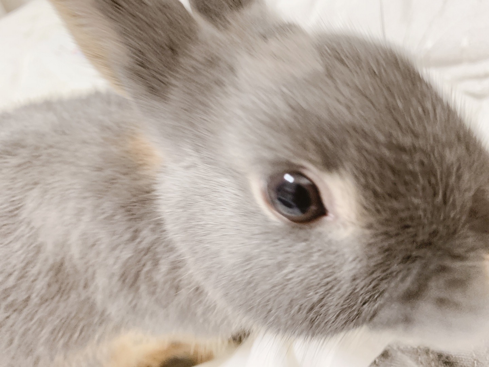
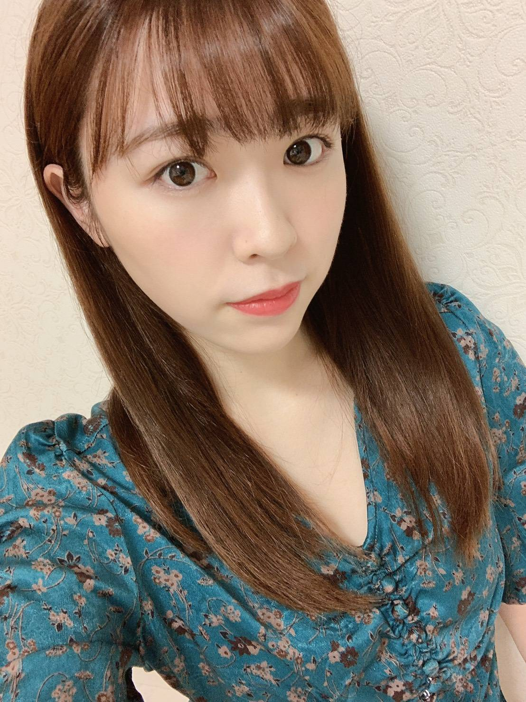

2020/0710Fri尻尾は黄色よ

お仕事の休憩時間に純奈がコーン付きアイスを
買ってくれました。
とっても嬉しくて机に置いて、
急ぎで梅座右衛門に用があったので
梅座右衛門の元に行ってきました。
帰ってきたらコーンしか残っていませんでした
コーンもしなしなでした。
今度は私が買ってあげます。
渡辺みり愛です（＾ω＾）

リズは元気ですよ！
爪切りにペットショップへ行くのですが
爪切りしている間人形かというくらい
固まってて不安そうにこっち見てくるし
身体完全に私に向けてくるし
怖いんだよね？緊張するよね？
そんなに私のこと好きなの？
お母さんの事好きなの？かあいいね？
と母性漏れ漏れになっております。

イヤリングはヴィンテージ
気に入り過ぎて買いました
絵柄、クレオパトラみたいな人がいる。

今やりたい事
・今年も読売ジャイアンツさんの試合早く
ドームに観に行きたい
・ルームディフューザーそろそろ
違う匂いに変えたい
・洋服爆買い
・毎年恒例だった家族旅行へ行きたい
皆さんが今やりたい事ありますか？
是非教えて下さい
早くライブがしたいなあ
そして、早く皆さんに会えますように、、
みり愛
2020/07/10 20:42


コメント(425)
やりたいこと、たくさんあるよね。野球観に行きたいし、旅行も行きたい。
もちろんライブも観たいです。
早く安心して行動できるようになって欲しいです。
リズ、かわいいですねー。飼い主がかわいいので、ペットもかわいいんですねー(^^)
身体に気をつけてくださいねー
ではー
みり愛ちゃんも可愛いよ〜
ブログ更新ありがとう♡
うちもライブ行きたいよぉ〜
またコメントすることにしましょあーー
自分は阪神ファンやけど笑笑
観戦に行くときは気をつけてね！
ライブが見たい！！早くみり愛と握手したい！
色んなところで実習をして早くトレーナーになりたい！！
今日という日にブログ更新してくれて幸せ
今やりたいことはいっぱいあるけど、みり愛ちゃんに会いたいってのが1番かな！
早く会いたいです！
俺が今1番したいことは、大学にいって友達を作ることです！
今年入学したけどまだ学校行ったことなくて、友達いないから早く学校行ってみたい！笑
コロナ気をつけてお仕事頑張ってね！
また握手会延びましたぴえん
次はいつになるのやら…
それまで楽しみに待ってます！
俺にもそのコーンのアイスくだちゃい
リズをなでなでしたい。（みり愛も一緒に）
今したいことかぁ
握手会行きたいなぁ〜早くみり愛に会いたい。
それが一番かな。
コロナ早く終息すればいいね〜
またみり愛ちゃんに会える日まで頑張ります！
みり愛ちゃんの服のセンス好きです！
私も洋服爆買いしたいな〜
おれも早くライブ行きたい！みり愛ちゃんに会いたい！
46時間テレビでのダンスかっこ良すぎたのでアイス買ってあげます！
んー、ライブ、行きたいねー。
でも、まだ我慢だねー。
しかしなんか、みり愛ちゃん、
大人っぽくなったねー。
まぁ母性もだだ漏れるか。
リズ、スゲー可愛いな。
自分はついこないだ、
野ウサギに遭遇しました。
最近のこの雨の中、
どう過ごしてるのか心配になります。
もう雨はいいかな。
暑くなるかもしれないけど、
晴れて欲しい。
神宮〜！
みり愛ちゃん、元気でいてね。
ではでは
みりあちゃんブログ更新ありがとう！
夏用の洋服少ないから爆買いしたいー！
おすすめのデザインとか教えてほしい笑
早く会いたいです！
最近天候不安定だから体調には気おつけてね！
写真可愛すぎる！リズも可愛い！
今やりたいことはライブです！
早くみり愛ちゃんに会いたいです〜
体に気をつけてお仕事頑張ってください！
純奈さん相変わらず気前がいいんですね。コーンしかなかったのはどんまいですねw
リズ可愛いですね。先日のオールナイトニッポンで日奈子さんが会いに行きたいと言ってましたよ！僕の住んでいるとこはペットがダメで飼えないのですがなにかペット飼ったら凄く親バカになりそうです。
ジャイアンツの試合僕も観にいきたいです。けど今は観に行けないのでテレビなどで僕も応援しようと思います。今の時点ではセ・リーグ上位なのでこの調子で優勝までいって欲しいですよね。
それはそうとモバメで送られてきた髪色めっちゃ可愛いですね。僕がしたいことは1度も髪を染めたことがないので染めてみたいです。でも就活があるのでだいぶ先になりそうです。
さらに僕は友達と名古屋旅行を計画してたのですがコロナで行けなくなったので国内旅行したいし、握手会とかライブにもいきたいです。
最後になりますが今日はブログ更新ありがとうございました！仕事で大変だと思いますがこれからも頑張って下さい。応援してます！
純奈は気前がいいからまた買ってくれるよ！笑
お仕事が増えてきたみたいでいいね〜。
リズがかわいすぎる…仲良くなれてる証拠だね！
またエピソードや写真待ってるよー。
自分も野球観に行きたい！でも東京ドームではなく神宮がいいなー。ライバルです笑
ではでは！
リズちゃん久々に見れて嬉しかったです◎
ペットショップで愛くるしい瞳を向けている姿が目に浮かびます可愛い、、
オレンジ色のトップスとイヤリングすごく似合ってて可愛い、！
ちょうどアクセサリーを買おうと思っていたので参考にします
私が今年やりたいことは
みりあちゃんと同様に洋服爆買い
潰れちゃった京都旅を叶える
みりあちゃんに逢いに行く！！ です
自体が落ち着いて早くライブを見に行ったり握手が
できる日を楽しみにしながら日々頑張ります。
みりあちゃんもお体にお気をつけて！
ペット飼うとすごくかわいい〜ってなるよね笑
俺も実家にいた時ネコそんな感じだったよ〜
やりたいこと沢山あるよねー
早く会えるの楽しみにしてるなー
自己紹介の前にショートストーリー挟むようになったのね！
次からも期待しちゃいますけども…笑
プロ野球もいよいよお客さん入れるようになったんだね！
俺、横浜ファンなんだけどまだ1回も横浜スタジアム行ったことないから今年か来年には行きたいと思ってる！
あとはね、全国各地にいる友達と集まってわちゃわちゃしたいかなー！
元々は全然知らない人たちだったんだけど、乃木坂の方を応援し始めて握手会とかライブとかで仲良くなった人たちなんよ！
めちゃくちゃ良い人たちばっかりでいつもお世話になってるんだけど、そんなきっかけとなったらみり愛ちゃんには本当に感謝してます。
また、握手会始まったらみんなでみり愛ちゃんに会いにいくね！
そんな感じでございます！
まだまだ気を抜かない状況が続いてるから、
お互い体調に気をつけましょう
やっぱりやりたいことは握手会、ライブに行くかもかな早く行から状況になって欲しい
肩に力が入らないのが、とってもいいですね。４６時間のダンスは凄かったけど感動しました。また、個握で「みり愛ちゃん」て普通なんだよね。会話に、「なんで」て、答えくれた時期が懐かしい（笑）では、また書きますね！
ライブにも行きたい！
とにかくみり愛ちゃんに会いたいよぉ
リズ可愛い〜生誕Tシャツに載るかな〜？まだ先だけど勝手に期待してます笑
やりたいことは、友達とファミレスでお話しとかかなー
握手会とかライブとかイベントももちろん参加したい。
早く収まって欲しいよ。
涼
ブログありがとう！！
私はたくさん会いたい人がいるのでその人たちに早く会いに行きたいですね。
もちろんみり愛ちゃんにも早く会いたいです。
ライブも行きたい！！
早く会える日が来るといいね。
アイスがより美味しく感じる季節になってきた
溶けてしまう儚さを感じたのなら、自分で良ければいくらでも買ってあげるよ笑
リズちゃん元気なんだね！
こないだの水曜日のANNでまいちゅんときいちゃんが、みり愛ちゃんが飼いそうなうさぎって話題にしてたよー
写真を拝見してるだけだけど、なんとなく二人が話してることに共感してしまった笑
髪色とても似合ってて良きです。
前髪も切りすぎたようには思わないけど、すぐ伸びるしそんな気にしないでねー。
やりたいことといえば
みり愛ちゃんに会いに行きたい
みり愛ちゃんのパフォーマンスをライブでみたい
川崎フロンターレの試合(サッカー)を現地で観たい
家族や友人と何も心配なく遠出したい
とかかなー
雨の日が続いたり暑かったりで過ごしにくい日も多いけど、負けじと頑張っていこうねー
ではまた
hideto
46時間テレビの電子台の革命の馬のオリジナルダンスめっちゃ感動したしとてもしなやかで格好よかったです
またライブに行けたらキレのあるダンス楽しみにしてます
みり愛ちゃんの握手行きたい
浜スタで応援したい
銀山温泉に行ってみたい
香水変えたい
かな！ストレス溜まるかもだけどがんばろう！
そうだねぇ。
今やりたい事は、みり愛ちゃんと
同じく野球を観戦に行きたいです。
私はロッテファンなのですが。
まだ観客の収容人数が少ないけど
早く以前の状態に戻って応援に行きたいですね。
もちろん、みり愛ちゃんに会いに行ける日を
願っています！
では、お体に気をつけて頑張って下さい。
純ちゃんアイス買ってくれたんだ優しい♪
Σ ﾟДﾟ≡( /)/ｴｪｯ!溶かしたの？(汗)
リズもっふもふ♪
髪色ベリーピンクって言うんですね～。
お写真だとそんなに真っ赤には見えないけど画像はけっこう色味違って見えちゃいますからね。
イヤリングの防御力が高そうw
ボクがやりたいことは一つ。
乃木坂のライブに行きたいです。
んで終わったあとに居酒屋でうまいビールとつまみを飲み食いしたいです。
アイスは食べたいけど買いに行かない？って…北海道からですかい？
ちょくちょくみり愛ちゃんから彼女感満載なモバメが来るのにけっこうな確率で買った自慢はするのにお洋服とか見せてくれないいじわる( ・３・)笑
部屋ちらかってるから部屋をきれいにしたい！笑
お疲れ様です
巨人の試合に行く
運動する
これぐらいかなー
自分は絶賛テスト勉強頑張ってます､､
受験が終わって、コロナも収まった頃にみり愛ちゃんにまた会いに行けるように頑張ります。
みり愛ちゃんの縦の自撮りとても好きなので、久々に見れて嬉しかったです
お身体にはお気をつけてください。
リズはかあいいね！自分の家にも犬が2匹おるけど爪切る時見てくるかも笑 最近雨が多いからカッパを着せたわけよ、いやぁかわいすぎて写真100枚は撮ったよね笑。かあいいね！って言いながらね。ペットっていうのはいいね尊いもん。
まさかあけおめも言えずに梅雨に入るなんて思わなかったけどブログやモバメでかわいいわたみさん見れて幸せなので良きです。
また会える時を楽しみにしております。その時はたくさんお喋りしましょう！！
やりたいことは〜
痩せたい。
学校のレポートを爆消し。
ゲーセンでクレーンゲーム。
みり愛のほくろを線で結びたい。すみません笑
では
渚生
渚生
アイス溶けちゃったんだね。今度は純奈と一緒に食べようね！
リズちゃんの写真、久しぶりで可愛い。いいお母さんしてるね。これからも可愛がってあげてね。
コロナと梅雨で大変だけど、いつもみり愛のメールで元気付けられてます。
新しい買った洋服を見に、握手会に行きたいな。
いつも通りモバメも楽しみに読ませてもらってますよー。
うーん、やっぱりみり愛ちゃんは可愛いのー( ´∀`)
っていつも唸ってる(笑)
今やりたいこと！
とりあえず早くみり愛ちゃんに会いたい！
まだまだ難しいかもしれないけど、その時になったらいち早く会いたい(笑)
またモバメもブログも楽しみにしてますね！
リズくん、みり愛に可愛がられててうらやましいぞ〜。
色々やりたいことはあるけど、まだ難しいことも多いよね。
できる範囲のことを精一杯楽しみながら過ごしていきたいね。
体調は回復したかな？天候も良くないしまだこれから暑くなっていくから体調維持に気をつけて、一緒にがんばろうね！
コメントする